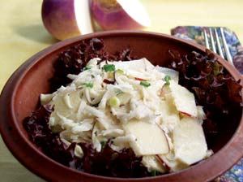

As a crop that’s fed humanity since prehistoric times, turnips deserve more respect in our modern gardens - and in our kitchens. No other vegetable gives you the choice between supernutritious greens or juicy roots that rival carrots for crunchiness, plus it’s easy to store perfect roots in a cool basement all the way through the first half of winter.
The world seems divided into people who love or hate turnip greens, though many haters change their minds after a few forks full of young, garden-grown turnip greens, which are delicately delicious compared to the hairy, coarse versions sold in bunches at supermarkets. Young greens smaller than your hand are ideal for quick stir fries, and they can stand in for spinach in calzones, casseroles and many other cooked dishes. I like to sauté young turnip greens with garlic, onions and end-of-the-season sweet peppers, then serve the colorful mélange over hot, cheesy polenta. Turnip greens are good for you too - they’re rich in vitamins A and C, as well as folic acid.
Even if you don’t think you will ever like turnip greens, your palate may be pleasantly surprised by the sprightly flavor of a perfectly grown raw salad turnip. Their mild flavor and crunchy texture come through best when the roots are picked just as they reach golf ball size and are enjoyed raw; peeling is optional. You can cut salad turnips into rounds or sticks to dip into salad dressing, hummus, cream cheese or even peanut butter (try it, you’ll like it). And thinly sliced salad turnips are great on sandwiches, or you can cook and pickle them (see “A Tasty Turnip Trio,” below). For a beautiful presentation, braise baby turnips, with a few leaves still attached, in a little canola oil. When the roots begin to brown, sprinkle on a pinch of salt and another of sugar, then turn off the heat. Yum!
In the garden, turnips are an easy, fast cool-weather crop you can grow in the fall and in spring. Any sunny, well-drained spot with average or better soil will do.
Harvesting only two leaves at a time from each plant will not seriously harm turnips’ ability to produce large roots, so it’s no problem to get both greens and plump turnips from the same planting.
Fall is a great time to grow salad turnips - try a red-skinned variety like ‘Scarlet Queen’ (43 days, hybrid), which needs cool soil to bring out its best flavor. In addition to turnips destined for salads, allow several square feet of growing space in your fall garden for turnips that will produce big, dense roots for cooking and storage, in addition to more greens than you can eat. White-fleshed ‘Purple Top White Globe’ (55 days, open pollinated), has a loyal following, or you can try ‘Golden Ball’ (65 days, open pollinated), ‘Amber Globe’ (63 days, open pollinated) or another variety with yellow flesh.
Fall turnips require steady, light moisture, but they need little, if any, supplemental fertilizer when planted where peas or beans grew during the summer. Sow your crop about six weeks before your first frost date, gradually thin the seedlings to 4 inches apart, and wait until a light frost sweetens the leaves before eating them.
Typically, spring turnip crops will be short-lived, because hot weather sharpens the leaves’ flavor, and longer days trigger early flowering. As spring turnips bolt, succulent green flower buds, known as raab, will be among your first tastes of spring. This is prime time for growing fast-maturing salad turnips such as ‘Hakurei’ (38 days, hybrid), or ‘White Egg’ (48 days, open pollinated), both of which produce great greens. Three weeks before your last spring frost date, plant the seeds about a quarter inch deep, and keep the bed moist until the seeds sprout. Plant turnips in rows or broadcast them over a bed. Either way, you’ll get a better crop of plump roots if you thin seedlings to 3 inches apart.
To enjoy the tender, thinned seedlings, simply braise them in olive oil with a few slivers of garlic and a light sprinkling of salt.
Fall storage turnips can be left in the garden until the roots are 3 to 4 inches in diameter, or until the first hard freeze arrives. Although the plants easily survive repeated freezes, the texture of the roots suffers when they freeze and thaw repeatedly.
To store a bumper crop, pull up the roots, then use a sharp knife to cut off the tops. Without washing the roots or cutting off the taproot, lay the turnips in a box no more than two deep, and store them in a root cellar or other humid place where the temperature stays below 45 degrees. Turnips left in the ground through winter become too pithy to eat, but the edible green flower buds that emerge first thing in spring make keeping a few tattered plants under mulch or a plastic tunnel - or replanting slightly softened roots - a worthwhile project. Turnip buds have an assertive flavor, even when cooked, but they make a nice addition to tossed hot pasta flavored with garlic and olive oil, then topped with shavings of hard cheese.
Gather mature turnip seeds after the pods dry to tan and begin to crack open. When stored in a cool, dry place, turnip seeds stay viable for up to five years. Collected in early summer, the dark brown seeds will be raring to sprout when nights cool down first thing in the fall.
Expand your fall menus with these three easy recipes.
1 beet (3 inches in diameter) or a small can of beets
3½ cups hot water
7 tbsp pickling salt
1¼ cups white vinegar
4 turnips about 3 inches in diameter
8 cloves garlic, peeled and halved
Cook the washed, unpeeled beet in 2 inches of water in a small saucepan for 20 minutes. Cool, peel and cut it into 1 inch pieces. Set aside. Dissolve salt in hot water, then stir in vinegar. Peel turnips and cut into 1 inch pieces. Place turnips, beet and garlic in clean, 1 pint canning jars, and cover with salt water. Screw on clean canning lids. Kept at room temperature, these pickled turnips are ready to eat in 3 days. Makes 4 pints.
2 tbsp plain yogurt or kefir
2 tbsp soy or regular mayonnaise
1/4 tsp freshly grated black pepper
1 tsp honey
1 apple, quartered, cored and thinly sliced (use your grater’s flat blade)
2 turnips (3 inches in diameter), peeled and coarsely grated
1 scallion, finely chopped
Combine the yogurt, mayo, pepper and honey in a large bowl. Mix in the apple, turnips and scallion. Chill before serving as a side dish or slathering onto burgers or sandwiches. Serves 4.
1 tbsp sesame oil
1 tbsp honey (or brown sugar)
4 turnips (3 inches in diameter), peeled and cut into wedges
1/2 tsp salt
1/4 tsp dried red pepper flakes
1 tbsp sesame seeds
Preheat oven to 400 degrees. Place sesame oil and honey in a baking dish. Add turnips, salt and red pepper flakes, then toss to coat the turnip pieces. Roast uncovered for 20 minutes, stirring twice. Sprinkle on sesame seeds and roast 10 minutes more. Serve warm, chilled or at room temperature. Serves 4.
Baker Creek Heirloom Seeds, Mansfield, Mo.; (417) 924-8917
Johnny’s Selected Seeds, Winslow, Maine; (877) 564-6697
Southern Exposure Seed Exchange, Mineral, Va.; (540) 894-9480
Territorial Seed Co., Cottage Grove, Ore.; (800) 626-0866
|
DAVID CAVAGNARO ‘Amber Globe,’ ‘Purple Top White Globe’ and ‘Golden Ball’ turnips |
 BARBARA PLEASANT Turnip Apple Slaw |
BARBARA PLEASANT 'White Egg' |
|
WILLIAM D. ADAMS ‘Hakurei’ |
|
|